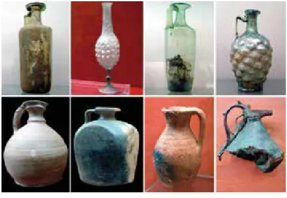

Kapitel 1 · Kurzer Überblick über die Geschichte des Weinbaus in Portugal
Die Zeit des Römischen Reiches

Felicitas Iulia
Zur Zeit des Römischen Reiches gewannen die Rebsorten so große Bedeutung, dass viele der einheimischen Sorten in die Kolonien gebracht oder später eingeführt wurden.
Nachdem die punischen Stämme im zweiten Jahrhundert v. Chr. von der Iberischen Halbinsel vertrieben worden waren, begann der römische Einfluss die Halbinsel zu prägen. Sie wurde durch Römerstraßen erschlossen, die systematisch mit Meilensteinen markiert waren. Diese calzadas romanas bildeten ein Netz, das dem regionalen Handel mit Wein und anderen Erzeugnissen diente.
Anschließend wurde das Gebiet in zwei Provinzen geteilt: Hispania Citerior („Diesseitiges Spanien“) und Hispania Ulterior („Jenseitiges Spanien“), die eine im Süden und Westen, die andere im Osten, während der Norden, also der Landstrich zwischen den Pyrenäen und Galicien, autonom blieb (siehe Abb. 2).
In Portugal wurden Fossilien von Kernen und getrockneten Beeren von Vitis vinifera aus dieser Zeit gefunden (Silva 1988, 16). Ein Pionier dieser Forschung war eine bedeutende Persönlichkeit (Silva, ebd.): Bruder Manuel do Cenáculo [Villas Boas] (1724–1814) vom Dritten Orden des heiligen Franziskus (Ordem Terceira de S. Francisco), Beichtvater der Krone, Mitglied der Königlichen Akademie der Wissenschaften in Lissabon, Bischof von Beja und Erzbischof von Évora. Er war Pädagoge und Reformer, Historiker und kultureller Ideengeber, Gründer von Bibliotheken sowie Förderer arabischer und archäologischer Studien in Portugal. Interessant ist hier sein Hinweis auf Funde „getrockneter Weinbeeren“ in Roxo (Alvalade, Santiago do Cacém) (Silva, ebd.).
Spuren des römischen Weinbaus finden sich überall in Portugal:
G. M. Pereira (1990: 58) schreibt über „Die Erhaltung der Weinpressen“ (torcularium), während V. Loureiro (1994)

83 solcher in den Fels gehauenen Weinpressen beschreibt;
Barros (1994) beschreibt 50 verschiedene römische Weinkeller (apotheca), und Santos Banha (1994) ordnete anhand von Funden aus Sellium und Tomar die unterschiedlichsten Amphorentypen ein; die unzähligen Fragmente von Amphoren (dolia) rechtfertigen es vollauf, diese Orte als römische Weinbereitungsstätten anzusehen.
Tatsächlich beeinflussten die Römer die damalige iberische Weinwirtschaft erheblich, sowohl bei den Rebsorten als auch beim technischen Fortschritt: mit der Einführung der Spindelpresse und verschiedener Amphoren für Gärung, Transport und Lagerung des Weins. In Torre da Palma (Monforte, Alentejo), Conímbriga und Mérida wurden Mosaiken mit Bacchantinnen und Amphoren entdeckt.
Seit den Römern war die Verwendung von Amphoren als Luxusgegenstände jedoch verbreitet (siehe Abb. 4). Johnson (1999: 85) bemerkt: „Die Idee der Weinflasche mag von den Ägyptern stammen, nach Portugal kam sie aber mit den Römern.“ Als weitere Lagerbehälter dienten Tonamphoren und Keramikgefäße verschiedener Größe, die mit Wachs verschlossen wurden. Auch Holzfässer kamen zum Einsatz.

Bedeutende Fossilien aus dem zweiten Jahrhundert n. Chr. wurden in einem römisch-lusitanischen Brunnen in Idanha-a-Velha (Portugal) gefunden, einer wichtigen Siedlung dieser Zeit. Dieser Fund ist Gegenstand einer Arbeit von Fernando de Almeida und Octávio da Veiga Ferreira (1967), die die via romana [Römerstraße] zwischen Emerita (Mérida) und Augusta (Braga) untersuchte.
Wein war sehr wichtig, ebenso Essig. In einem Hafen an der Mündung des Sado in der Herdade da Barrosinha bei Alcácer do Sal wurden zahlreiche Tonamphoren mit Wein- und Essigrückständen gefunden. Diese Tongefäße dienten nicht nur der Lagerung, sondern auch dem Transport und sogar dem Export von Wein.
Archäologen glauben, in Vale de Mir eine der ältesten Weinpressen im Douro und in Trás-os-Montes entdeckt zu haben. Sie stammt aus dem 1. Jahrhundert n. Chr.; die Forscher untersuchen dort seit vier Jahren die Entwicklung der menschlichen Besiedlung in der Gemeinde Alijó. „Es ist das erste Mal, dass in diesem Teil Portugals eine Weinpresse aus dieser Zeit, dem Ende des 1. Jahrhunderts n. Chr., gefunden wurde“, sagt der Forscher.
Die römische Villa von São Cucufate, auch Ruinen von Santiago genannt, ist ein historisches Denkmal in Vila de Frades in der Gemeinde Vidigueira in Portugal. Sie besteht aus den Ruinen einer römischen Anlage mit Weinpresse. Die Weinkultur der Römer zeigt sich bis heute in den zahlreichen römischen Talhas (großen Tongefäßen). Riesige Talhas, die jeweils etwa 400 bis 500 Liter Wein fassen und genau nach der traditionellen Methode arbeiten, die die Römer vor rund 2.000 Jahren auf die Iberische Halbinsel brachten, wurden in das Nationale Inventar des Immateriellen Kulturerbes (Inventário Nacional do Património Cultural Imaterial – INPCI) aufgenommen. Im Zuge dieses Verfahrens wurde alles genutzt, was mit dem Antrag zusammenhing. Daraus entstand diese Route, gestützt auf die bereits bestehende Vereinbarung mit 22 Gemeinden und sieben Organisationen, die sich so zu einem touristischen Angebot zusammengeschlossen haben, das den ganzen Alentejo umfasst, unabhängig davon, ob einzelne Gemeinden zum Alentejo gehören oder nicht.
Braga (Bracara Augusta) wurde auf der von Augustus gegründeten Römerstadt erbaut. Spuren von Bracara Augusta finden sich überall in der Altstadt: Bei jeder Baumaßnahme kommen Ruinen und Gegenstände zum Vorschein.